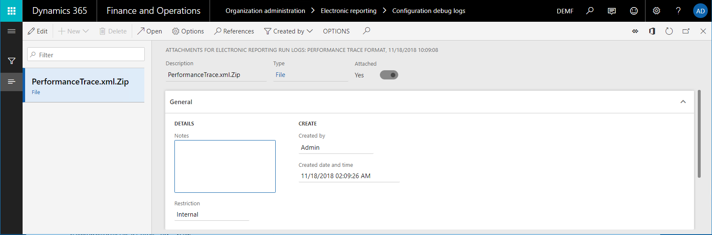
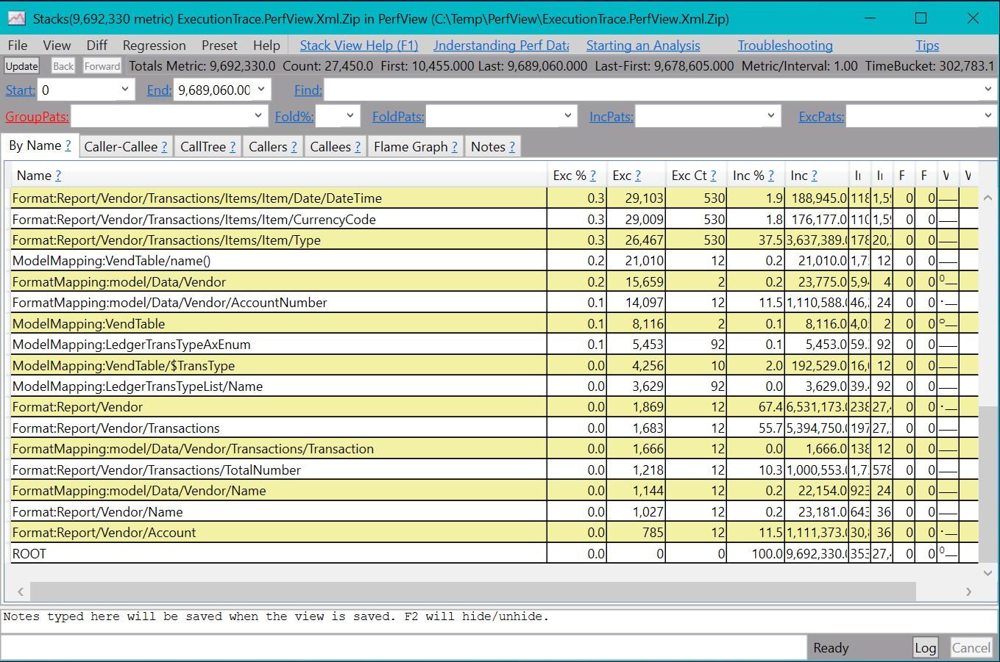

Trace the execution of ER formats to troubleshoot performance issues
As part of the process of designing Electronic reporting (ER) configurations to generate electronic documents, you define the method that is used to get data out of the application and enter it in the output that is generated. The ER performance trace feature helps significantly reduce the time and cost that are involved in collecting the details of ER format execution and using them to troubleshoot performance issues. This tutorial provides guidelines about how to take performance traces for executed ER formats, and how to use the information from these traces to help improve performance.
Prerequisites
To complete the examples in this tutorial, you must have the following access:
Access to one of the following roles:
- Electronic reporting developer
- Electronic reporting functional consultant
- System administrator
Access to the instance of Regulatory Configuration Services (RCS) that has been provisioned for the same tenant as the application, for one of the following roles:
- Electronic reporting developer
- Electronic reporting functional consultant
- System administrator
You must also download and locally store the following files.
| File | Content |
|---|---|
| Performance trace model.version.1 | Sample ER data model configuration |
| Performance trace metadata.version.1 | Sample ER metadata configuration |
| Performance trace mapping.version.1.1 | Sample ER model mapping configuration |
| Performance trace format.version.1.1 | Sample ER format configuration |
Configure ER parameters
Each ER performance trace that is generated in the application is stored as an attachment of the execution log record. The Document management (DM) framework is used to manage these attachments. You must configure ER parameters in advance, to specify the DM document type that should be used to attach performance traces. In the Electronic reporting workspace, select Electronic reporting parameters. Then, on the Electronic reporting parameters page, on the Attachments tab, in the Others field, select the DM document type to use for performance traces.

To be available in the Others lookup field, a DM document type must be configured in the following manner on the Document types page (Organization administration > Document management > Document types):
- Class: Attach file
- Group: File
Note
The selected document type must be available in every company of the current instance, because DM attachments are company-specific.
Configure RCS parameters
ER performance traces that are generated will be imported into RCS for analysis by using the ER format designer and the ER mapping designer. Because ER performance traces are stored as attachments of the execution log record that is related to the ER format, you must configure RCS parameters in advance, to specify the DM document type that should be used to attach performance traces. In the instance of RCS that has been provisioned for your company, in the Electronic reporting workspace, select Electronic reporting parameters. Then, on the Electronic reporting parameters page, on the Attachments tab, in the Others field, select the DM document type to use for performance traces.

To be available in the Others lookup field, a DM document type must be configured in the following manner on the Document types page (Organization administration > Document management > Document types):
- Class: Attach file
- Group: File
Design an ER solution
Assume that you've started to design a new ER solution to generate a new report that presents vendor transactions. Currently, you can find the transactions for a selected vendor on the Vendor transactions page (go to Account payable > Vendors > All vendors, select a vendor, and then, on the Action Pane, on the Vendor tab, in the Transactions group, select Transactions). However, you want to have all vendor transaction at the same time in one electronic document in XML format. This solution will consist of several ER configurations that contain the required data model, metadata, model mapping, and format components.
Sign in to the instance of RCS that has been provisioned for your company.
In this tutorial, you will create and modify configurations for the Litware, Inc. sample company. Therefore, make sure that this configuration provider has been added to RCS and selected as active. For instructions, see the Create configuration providers and mark them as active procedure.
In the Electronic reporting workspace, select the Reporting configurations tile.
On the Configurations page, import the ER configurations that you downloaded as a prerequisite into RCS, in the following order: data model, metadata, model mapping, format. For each configuration, follow these steps:
- On the Action Pane, select Exchange > Load from XML file.
- Select Browse to select the appropriate file for the required ER configuration in XML format.
- Select OK.

Run the ER solution to trace execution
Assume that you've finished designing the first version of the ER solution. You now want to test it in your instance and analyze execution performance.
Import an ER configuration from RCS into Finance and Operations
Sign in to your application instance.
For this tutorial, you will import configurations from your RCS instance (where you design your ER components) into your instance (where you test and finally use them). Therefore, you must make sure that all the required artifacts have been prepared. For instructions, see the Import Electronic reporting (ER) configurations from Regulatory Configuration Services (RCS) procedure.
Follow these steps to import the configurations from RCS into the application:
- In the Electronic reporting workspace, on the tile for the Litware, Inc. configuration provider, select Repositories.
- On the Configuration repository page, select the repository of the RCS type, and then select Open.
- On the Configurations FastTab, select the Performance trace format configuration.
- On the Versions FastTab, select version 1.1 of the selected configuration, and then select Import.
The corresponding versions of the data model and model mapping configurations are automatically imported as prerequisites for the imported ER format configuration.
Turn on the ER performance trace
Go to Organization administration > Electronic reporting > Configurations.
On the Configurations page, on the Action Pane, on the Configurations tab, in the Advanced settings group, select User parameters.
In the User parameters dialog box, in the Execution tracing section, follow these steps:
In the Execution trace format field, select Debug trace format to start to collect the details of ER format execution. When this value is selected, the performance trace will collect information about the time that is spent on the following actions:
- Running each data source in the model mapping that is called to get data
- Processing each format item to enter data in the output that is generated
You use the Execution trace format field to specify the format of the generated performance trace that the execution details are stored in for ER format and mapping elements. By selecting Debug trace format as the value, you will be able to analyze the content of the trace in ER Operation designer, and see the ER format or mapping elements that are mentioned in the trace.
Set the following options to Yes to collect specific details of the execution of the ER model mapping and ER format components:
Collect query statistics – When this option is turned on, the performance trace will collect the following information:
- The number of database calls that were made by data sources
- The number of duplicate calls to the database
- Details of the SQL statements that were used to make database calls
Trace access of caching – When this option is turned on, the performance trace will collect information about the ER model mapping's cache usage.
Trace data access – When this option is turned on, the performance trace will collect information about the number of calls to the database for executed data sources of the record list type.
Trace list enumeration – When this option is turned on, the performance trace will collect information about the number of records that are requested from data sources of the record list type.
Note
The parameters in the User parameters dialog box are specific to the user and the current company.

Run the ER format
- Select the DEMF company.
- Go to Organization administration > Electronic reporting > Configurations.
- On the Configurations page, in the configuration tree, select the Performance trace format item.
- On the Action Pane, select Run.
Notice that the file that is generated presents information about 265 transactions for six vendors.
Review the execution trace
Export the generated trace from the application
Performance traces are decoupled from the source ER format and can be serialized to an external zip file.
Go to Organization administration > Electronic reporting > Configuration debug logs.
On the Electronic reporting run logs page, in the left pane, in the Configuration name field, select Performance trace format to find the log records that have been generated by the execution of the Performance trace format configuration.
Select the Attachments button (the paper clip symbol) in the upper-right corner of the page, or press Ctrl+Shift+A.
On the Attachments for Electronic reporting run logs page, on the Action Pane, select Open to get the performance trace as a zip file and store it locally.

Note
The trace that is generated has a reference to the source ER report via a unique report identifier in GUID format only. The version numbering of the format isn't considered.
Notice that the association between the performance trace that has been generated for the executed ER format and the ER model mapping is based on the root descriptor that was used and the common data model. The version numbering of the format and model mapping isn't considered. The setting of the Default for model mapping flag for the model mapping also isn't considered.
Import the generated trace into RCS
In RCS, in the Electronic reporting workspace, select the Reporting configurations tile.
On the Configurations page, in the configuration tree, expand the Performance trace model item, and select the Performance trace format item.
On the Action Pane, select Designer.
On the Format designer page, on the Action Pane, select Performance trace.
In the Performance trace result settings dialog box, select Import performance trace.
Select Browse to select the zip file that you exported earlier.
Select OK.

Use the performance trace for analysis in RCS – Format execution
In RCS, on the Format designer page, select Expand/collapse to expand the content of all format items.
Notice that additional information is shown for some items of the current format:
- The actual time that was spent entering data in the generated output by using the format item
- The same time expressed as a percentage of the total time that was spent generating the whole output

Close Format designer page.
Use the performance trace for analysis in RCS – Model mapping
- In RCS, on the Configurations page, in the configuration tree, select the Performance trace mapping item.
- On the Action Pane, select Designer.
- Select Designer.
- On the Model mapping designer page, on the Action Pane, select Performance trace.
- Select the trace that you imported earlier.
- Select OK.
Notice that new information becomes available for some data source items of the current model mapping:
- The actual time that was spent getting data by using the data source
- The same time expressed as a percentage of the total time that was spent running the whole model mapping
Notice that ER informs you that the current model mapping duplicates database requests while the VendTable/<Relations/VendTrans.VendTable_AccountNum data source is run. This duplication occurs because the list of vendor transactions is called two times for each iterated vendor record:
- One call is made to enter details of each transaction in the data model, based on configured bindings.
- One call is made to enter the calculated number of transactions per vendor in the data model.

The value [Q:530] indicates that the VendTrans table was called 530 times to return a record from that table to the VendTable/<Relations/VendTrans.VendTable_AccountNum data source. The value [530] indicates that the VendTable/<Relations/VendTrans.VendTable_AccountNum data source was called 530 times to return a record from that data source and enter the details from it in the data model.
We recommend that you use caching for the VendTable/<Relations/VendTrans.VendTable_AccountNum data source, to reduce the number of calls that are made to get the details for 265 transactions and help improve the performance of the model mapping.
It can also be useful to reduce the number of calls that are made to the LedgerTransTypeList data source. This data source is used to associate each value of the LedgerTransType enumeration with its label. By using this data source, you can find an appropriate label and enter it in the data model for each vendor transaction. The current number of calls to this data source (9,027) is quite high for 265 transactions.
Improve the model mapping based on information from the execution trace
Modify the logic of the model mapping
Follow these steps to use caching, to help prevent duplicate calls to the database:
- In RCS, on the Model mapping designer page, in the Data sources pane, select the VendTable item.
- Select Cache.
- Expand the VendTable item, expand the list of one-to-many relations for the VendTable data source (the <Relations item), and select the VendTrans.VendTable_AccountNum item.
- Select Cache.
Follow these steps to bring the LedgerTransTypeList data source into the scope of the VendTable data source:
- In the Data source types pane, expand the Functions item, and select the Calculated field item.
- In the Data sources pane, select the VendTable item.
- Select Add.
- In the Name field, enter $TransType.
- Select Edit formula.
- In the Formula field, enter LedgerTransTypeList.
- Select Save.
- Close the Formula editor page.
- Click OK.
Follow these steps to do caching of the $TransType field:
- Select the LedgerTransTypeList item.
- Select Cache.
- Select the VendTable.$TransType item.
- Select Cache.
Follow these steps to change the $TransTypeRecord field so that it starts to use the cached $TransType field:
In the Data sources pane, expand the VendTable item, expand the <Relations item, expand the VendTrans.VendTable_AccountNum item, and select the VendTable. VendTrans.VendTable_AccountNum.$TransTypeRecord item.
Select Edit.
Select Edit formula.
In the Formula field, find the following expression:
FIRSTORNULL (WHERE (LedgerTransTypeList, LedgerTransTypeList.Enum = @.TransType))
In the Formula field, enter the following expression:
FIRSTORNULL (WHERE (VendTable.'$TransType', VendTable.'$TransType'.Enum = @.TransType)).
Select Save.
Close the Formula editor page.
Select OK.
Select Save.
Close the Model mapping designer page.
Close the Model mappings page.
Complete the modified version of the ER model mapping
- In RCS, on the Configurations page, on the Versions FastTab, select version 1.2 of the Performance trace mapping configuration.
- Select Change status.
- Select Complete.
Import the modified ER model mapping configuration from RCS into the application
Repeat the steps in the Import an ER configuration from RCS into Finance and Operations section earlier in this topic to import version 1.2 of the Performance trace mapping configuration.
Run the modified ER solution to trace execution
Run the ER format
Repeat the steps in the Run the ER format section earlier in this topic to generate a new performance trace.
Work with the execution trace
Export the generated trace from the application
Repeat the steps in the Export the generated trace from the application section earlier in this topic to save a new performance trace locally.
Import the generated trace into RCS
Repeat the steps in the Import the generated trace into RCS section earlier in this topic to import the new performance trace into RCS.
Use the performance trace for analysis in RCS – Model mapping
Repeat the steps in the Use the performance trace for analysis in RCS – Model mapping section earlier in this topic to analyze the latest performance trace.
Notice that the adjustments that you made to the model mapping have eliminated duplicate queries to database. The number of calls to database tables and data sources for this model mapping has been also reduced. Therefore, the performance of the whole ER solution has improved.

In the trace information, the value [12] for the VendTable data source indicates that this data source was called 12 times. The value [Q:6] indicates that six calls were translated to database calls to the VendTable table. The value [C:6] indicates that the records that were fetched from the database were cached, and six other calls were processed by using the cache.
Notice that the number of calls to the LedgerTransTypeList data source has been reduced from 9,027 to 240.

Review the execution trace in the application
In addition to RCS, some versions might offer capabilities for an ER framework designer experience. These versions have an Enable design mode option that can be turned on. You can find this option on the General tab of the Electronic reporting parameters page, which you can open from the Electronic reporting workspace.
If you use one of these versions, you can analyze the details of generated performance traces directly in the application. You don't have to export them from the application and import them into RCS.
Review the execution trace by using external tools
Configure user parameters
- Go to Organization administration > Electronic reporting > Configurations.
- On the Configurations page, on the Action Pane, on the Configurations tab, in the Advanced settings group, select User parameters.
- In the User parameters dialog box, in the Execution tracing section, in the Execution trace format field, select PerfView XML.
Run the ER format
Repeat the steps in the Run the ER format section earlier in this topic to generate a new performance trace.
Notice that the web browser offers a zip file for download. This file contains the performance trace in PerfView format. You can then use the PerfView performance analysis tool to analyze the details of ER format execution.

Use external tools to review an execution trace that includes database queries
Because of improvements that have been made to the ER framework, the performance trace that is generated in PerfView format now offers more details about ER format execution. In Microsoft Dynamics 365 for Finance and Operations version 10.0.4 (July 2019), this trace can also include details of executed SQL queries to the application database.
Configure user parameters
Go to Organization administration > Electronic reporting > Configurations.
On the Configurations page, on the Action Pane, on the Configurations tab, in the Advanced settings group, select User parameters.
In the User parameters dialog box, in the Execution tracing section, set the following parameters:
- In the Execution trace format field, select PerfView XML.
- Set the Collect query statistics option to Yes.
- Set the Trace query option to Yes.

Run the ER format
Repeat the steps in the Run the ER format section earlier in this topic to generate a new performance trace.
Notice that the web browser offers a zip file for download. This file contains the performance trace in PerfView format. You can then use the PerfView performance analysis tool to analyze the details of ER format execution. This trace now includes the details of SQL database access during the execution of the ER format.